Borwein Integrals
Sep 23, 2018
Justin Pearson
Source: https://www.futilitycloset.com/2018/02/02/breakdown-2/
Problem statement
Check out this strange behavior:


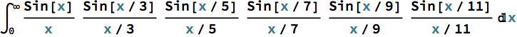


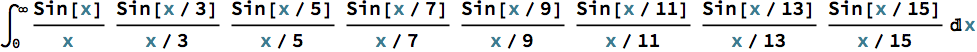
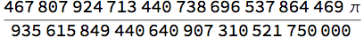
This is quite close to π/2:

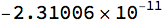
The next term in the series is a little farther away from π/2:


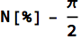

It only gets worse from there:

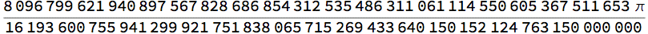

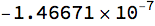
What’s going on here?
Analysis
Each integral is a product of scaled sinc functions, which corresponds to a convolution of scaled rect functions in the Fourier domain.
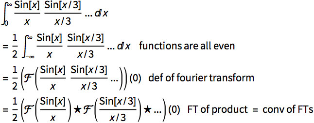
Next we use the fact that the FT of a sinc is a rect. Specifically:
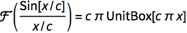
Example:

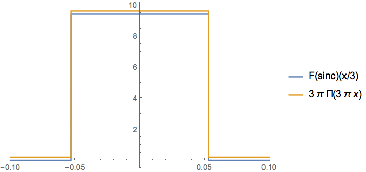
So our integral becomes
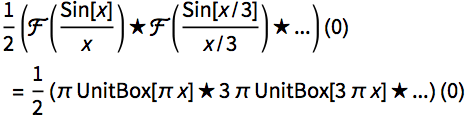
We now study the series of convolutions π UnitBox[π x]★ 3π UnitBox[3π x]★...
The UnitBoxes:


They all have unit area:
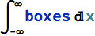
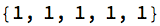
The boxes’ widths follow a simple pattern as they get smaller:
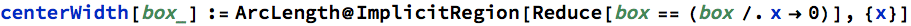

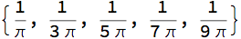
Convolving these boxes together yields a progressively smoother function.
Here is the succession of convolutions


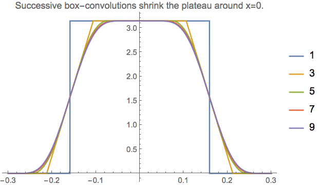
Zoom in:


At 0, each convolution takes the value π:
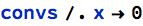
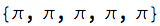
That’s why the integrals 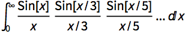 have value π/2.
However, successive convolutions’ widths get smaller:


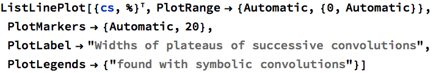

Does this sequence stay positive forever, or does it cross zero?
Brute-force find a pattern:


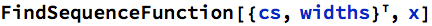
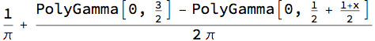
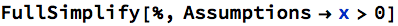
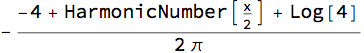
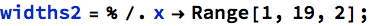
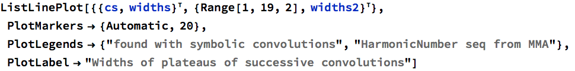
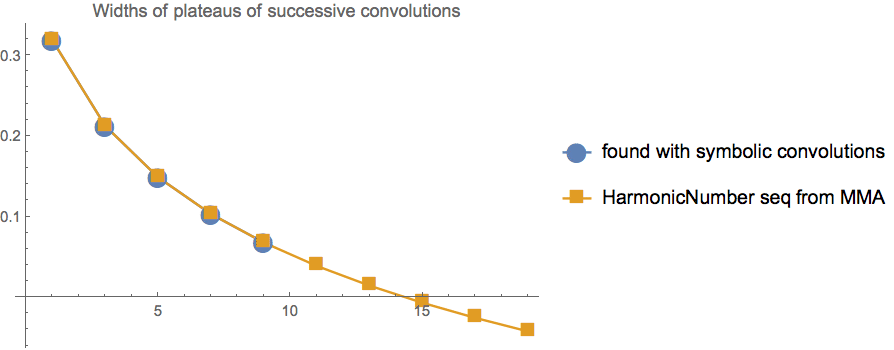
So it looks like the x/15 term has a “negative” width, indiciating the plateau has been convolved away.
Besides this weird formula with harmonic numbers, there is a simpler way to express the widths of the convolutions. Convolving a box with a smaller box of width c reduces the width of the flat center region by c. So the width of successive box-convolutions can be found by successively subtracting box widths from the width of the original box 1/π:


This matches the widths we found with symbolic convolution:

This is good because the closed-form expression of the x/15 convolution is too big for Mathematica.
This matches the widths of our symbolic convolutions, as well as our werd formula with harmonic numbers:


The curve goes negative at x=15, meaning the convolutions have eaten up the entire flat center region at the x/15 convolution, so the value of the FT at 0 is less than π/2. I think it would be difficult to figure out how much less that π/2 it is; it’s probably easiest to just perform the infinite integral.